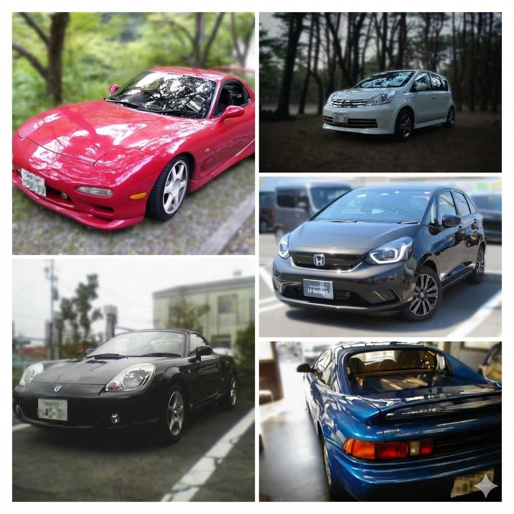
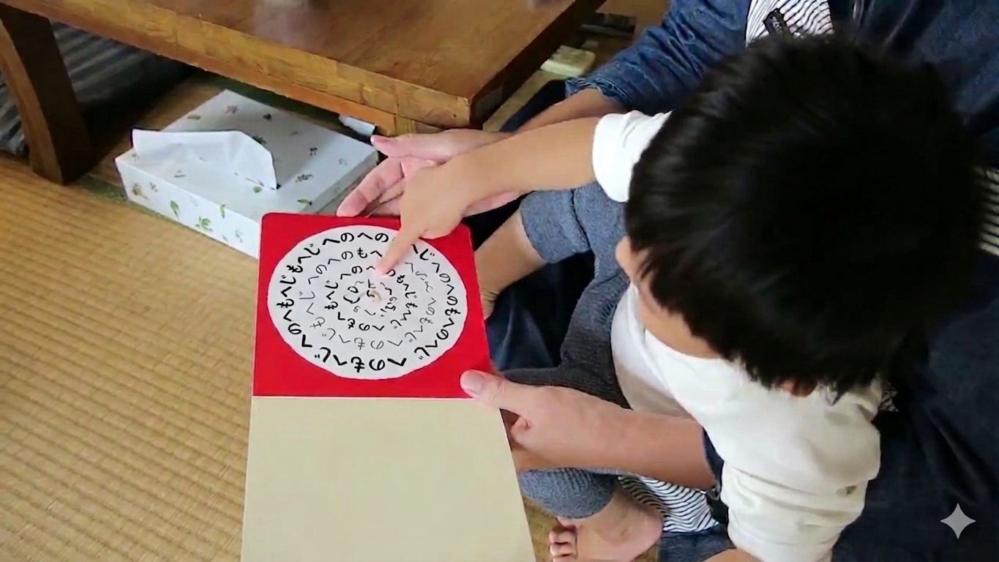

Cars

Taking a break from sports driving. Great fuel economy and comfort, too.

Taking a break from sports driving. Great fuel economy and comfort, too.
I’ve never been much of a hiker, but I recently hurt my leg, so I guess I’ll have to put this on hold too.
Van Halen is a god. Official Site →
LOVE PSYCHEDELICO Aimyon
Lately, I’ve been exploring soothing sounds across all genres, including jazz. My only problem is that my music collection has grown so large that it’s becoming hard to manage.

I am an avid reader of Stephen King's works.
Ryunosuke Akutagawa Shinichi Hoshi